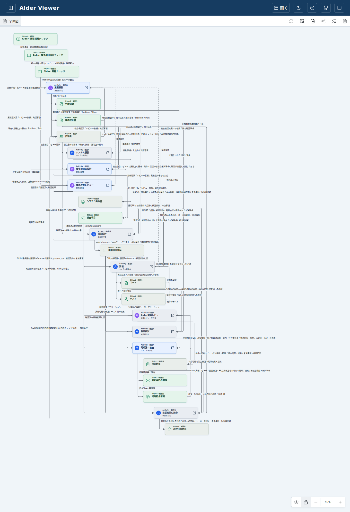
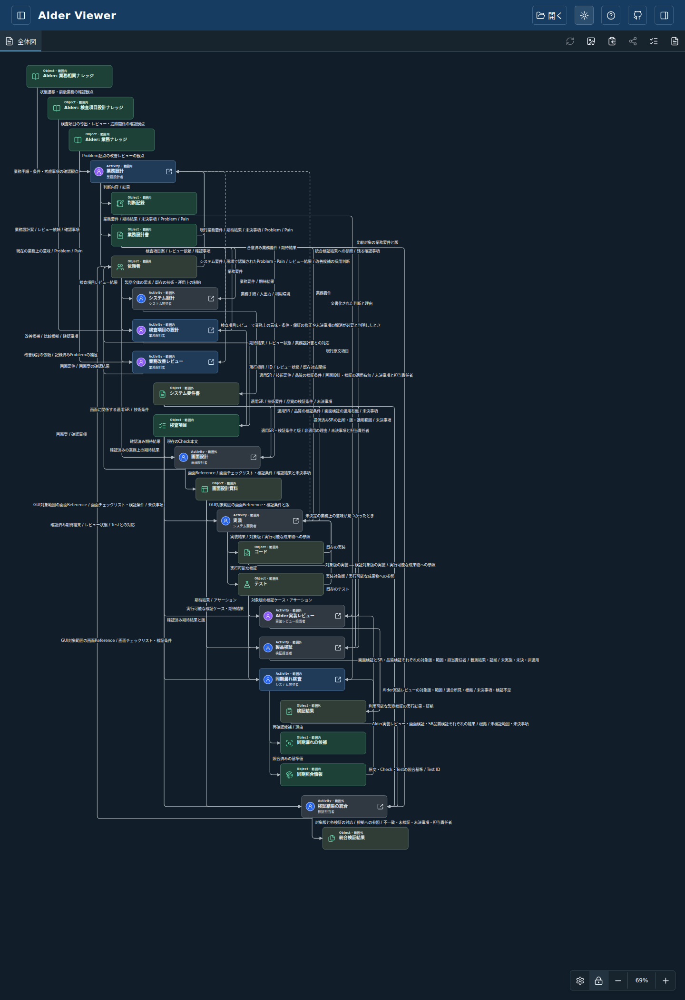
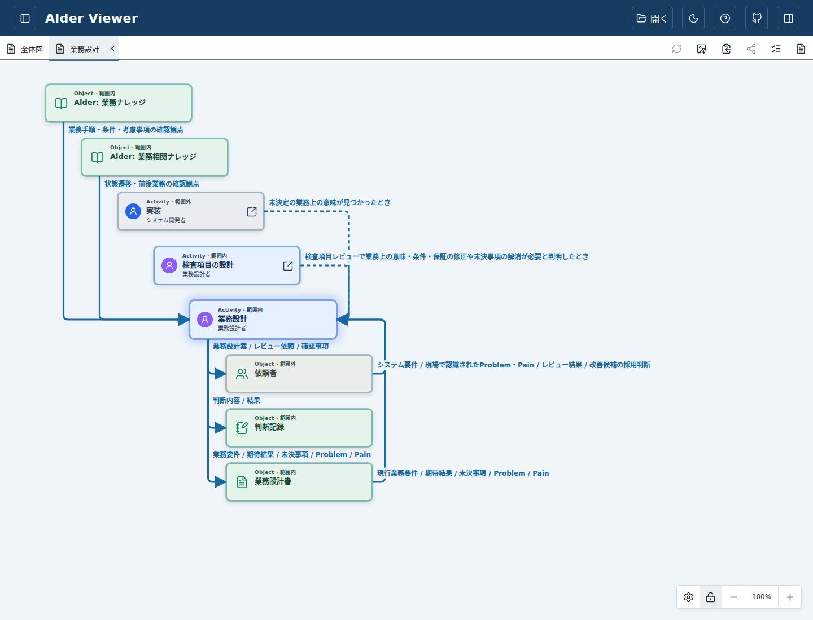
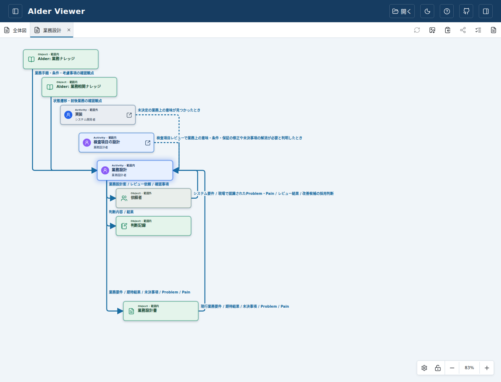
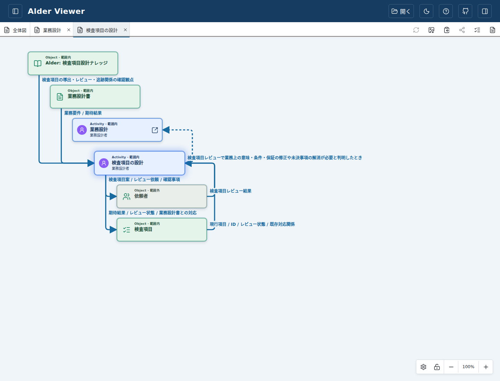
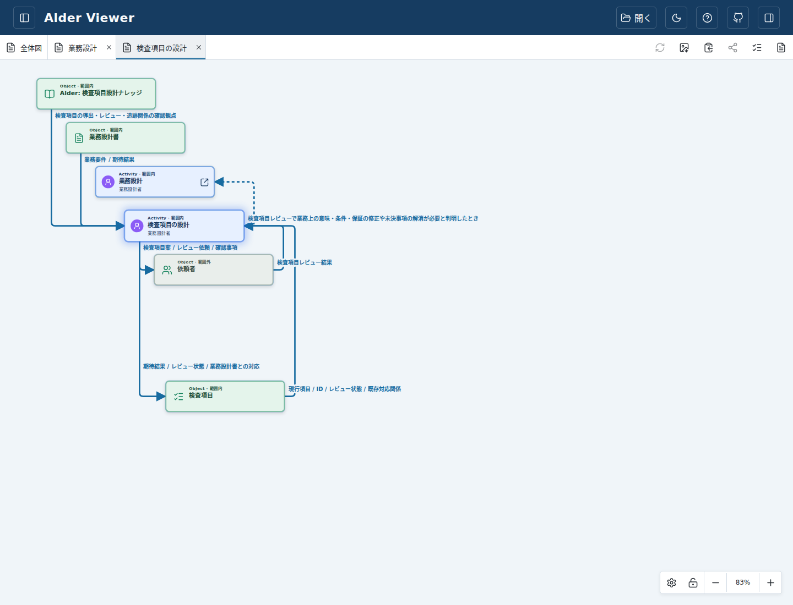
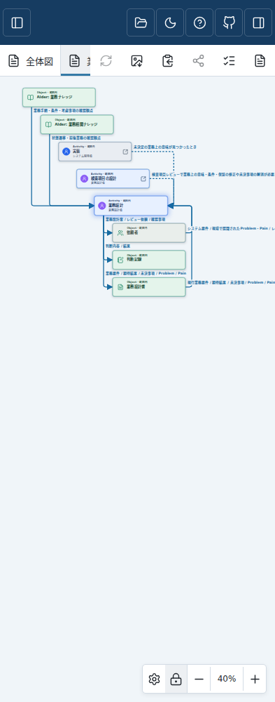
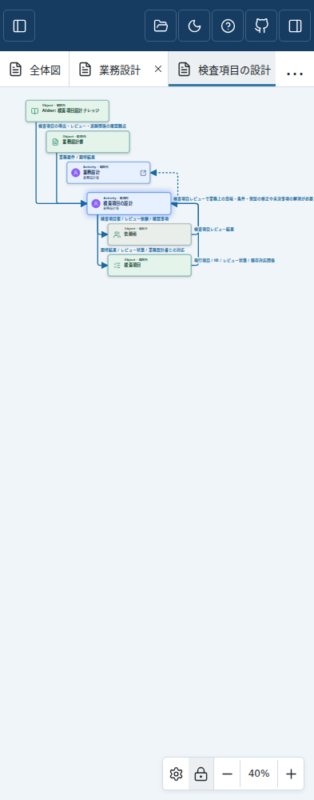

上流Knowledgeを左上から64ずつずらす階段へ配置。通常Inputは下面からActivity左側へ、例外線は右側から右側へ戻します。破線・有向性・保存済み座標は維持します。
この版で標準サンプルを開く · Draft PR #245 · 検証状況
確認版 d5031133fa452e2b673e54cee490126804d10668。全体図も詳細と同じ横64・縦96の詰めた階段配置へ揃えました。依存関係の列・読み順と、シェイプの重なり回避は保ちます。右側の戻り線は一定距離で曲がり、同じ列では縦区間を共有します。
以前保存した座標は変えません。「表示設定 → レイアウトを初期値に戻す」で新しい配置を試せます。説明の左揃え・線の横からの書き出し・ドラッグ追従は維持しています。本人GUI再レビュー前につき未採用。merge/releaseは行いません。







